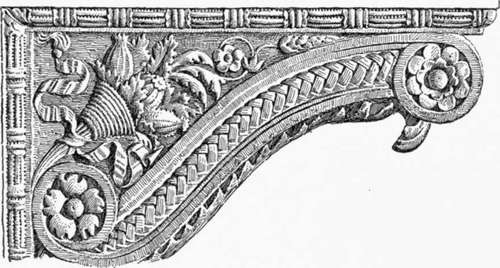
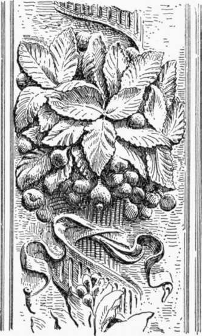
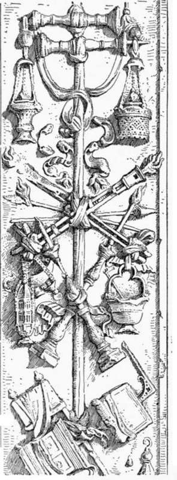
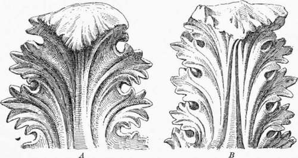
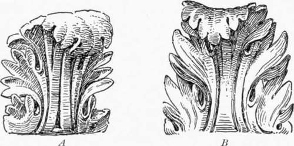
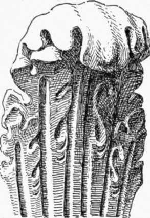
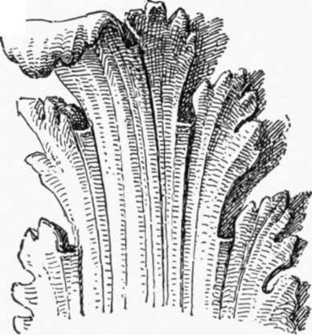
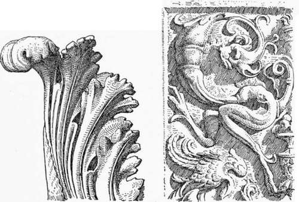
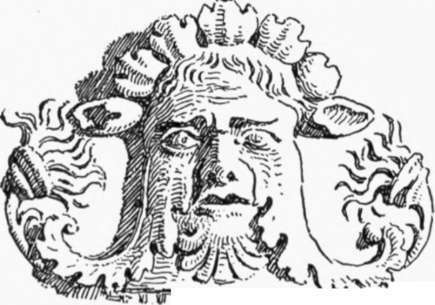

Architectural Carving Of The Renaissance. Continued
Description
This section is from the book "Character Of Renaissance Architecture", by Charles Herbert Moore. Also available from Amazon: Character of Renaissance Architecture.
Architectural Carving Of The Renaissance. Continued
It is a fundamental weakness of this style of ornamentation that it is so largely made up of artificial convolutions and formal symmetries. Reduced to its linear elements, it mainly consists either of an axial line with scrolls and weak curves set symmetrically on either side of it, or of a formal meander with alternating scrolls. The wearisome repetition of these two schemes of composition is a characteristic of the art of the Renaissance. Many changes are wrung on these primary motives, but no possible variation of them can relieve their dulness. That they are derived from an ancient source does not justify their use. They are not, however, drawn from the best ancient source. In Greek art elements of a kindred nature had been treated in a finer way, with exquisite moderation of curvature and vitality of line. But the ornamental designers of the Renaissance drew their inspiration from the Grasco-Roman travesties of Greek ornamentation, such as the tiresome arabesques that were painted on the walls of Pompeian houses.
The arrangements, as well as the treatment, of the details drawn from plant life that are associated with this style of design are often most artificial and inorganic, as in the pulpit of Santa Croce before mentioned, where on the side of a console (Fig. 100) fruit and leafage issue from a nondescript receptacle of ungraceful shape, having a clumsy fluted stalk bound with a fluttering ribbon ending in a tassel. Such unnaturally composed details are unknown in the pure Gothic art which the men of the Renaissance thought so barbaric. The introduction of objects like the singular cornucopia and the ribbon of this design is common in Renaissance ornamentation. Without affirming that artificial objects may never enter into an ornamental composition, I think it may be said that such objects, if used as conspicuous features, ought to have some beauty of form,1 and certainly every group of objects, of whatever kind, should be composed so as to produce an effect of organic unity.
Fig. 100. — Console of pulpit in Santa Croce.
1 The theory respecting the use of artificial elements in architectural ornamentation developed by Ruskin in his well-known chapter entitled, "The Lamp of Beauty," in the Seven Lamps of Architecture, is, i believe, entirely right in principle, though the author is arbitrary in some of his conclusions and overemphatic in some of his statements.
Each detail ought to have a place and a posture which should make it a part of some system of related ornamental lines. This is, of course, elementary, and the principle is usually carried out in the ornamentation of the Renaissance, though in a highly artificial way. But in the design on the triangular panel of this console there is no fine system of related lines. The fruit and leafage have a disjointed arrangement, and the wriggled ribbon has no beauty of line or surface.
Instances of such disordered composition are conspicuous in the borders of the famous Ghiberti gates of the Florentine Baptistery, where the bosses of leafage set at regular intervals are composed in the same inorganic way (Fig. 101), and the bunches are bound with spiral fluted fillets. It is noticeable that the details are here elaborated with a minute naturalistic completeness that is incompatible with architectural effectiveness. The possibilities of the bronze material in which the design is wrought are developed to the utmost in the rendering of leaf veinings, serrations, and surface textures. This tendency to combine excessive naturalism with extremely artificial composition is a curious characteristic of both Roman and Renaissance art.
Fig. 101. — Leafage from the Ghiberti gates.
We find in the ornamental carving of the Renaissance not only a formal, and often a disjointed, scheme of composition, with artificial objects of no beauty or meaning introduced among elements derived from natural forms, but numerous instances occur where the design is made up entirely of such objects, as in a pilaster in the National Museum of Florence (Fig. 102). Such value as this design has lies wholly in its childish symmetry of arrangement of the ugly elements about an axis. It contains nothing else on which the eye can rest with pleasure. I think it may be taken as a true principle that architectural ornament cannot be good unless it be an expression of the kind of beauty that we find in organic nature. I do not say that the elements of such ornament must be directly, or consciously, drawn from nature; but every quality of line and surface that, in a healthy state of mind, we feel to be beautiful is exemplified in organic nature, so that however abstract or conventional a piece of good carving may be, its forms will have a correspondence with those of natural objects.
Fig. 102. — Pilaster in the National Museum, Florence.
The finest forms that occur in the carvings of the Renaissance are those of foliation such as we have already noticed (p. 170). But even these are rarely of real excellence. An appreciation of the vital beauty of leafage has in general not been manifested by the Italians, whether ancient or modern. The leafage of Roman art is as inferior to Greek leafage as that of the Renaissance is to the foliation of the French Gothic carvers. Take, for instance, the crisp acanthus leaves of the :apital from Epidaurus(Fig. 103) in the National Museum of Athens, with their strong nervous life notwithstanding their severely conventional treatment; or the leaf B in the same figure, from another Greek capital in the same museum, with its spiky cusps and its exquisite systems of radiating lines — at once true to nature and effective as ornament; and compare with these any examples of Roman, or Groeco-Roman, leafage, as A and B (Fig. 104). Observe in A, from a composite capital in the Naples Museum, the excessive convolution of the leaf ends, the obtuse rounded cusps, the lack of radial relationship in the lines of depression, and the unmodelled flatness of the surfaces between the furrows. And notice in B, from a Corinthian capital supposed to have belonged to the so-called Temple of Jupiter Stator, the immoderate and artificial undulations of line and surface.
Fig. 103. — Greek leafage.
Fig. 104. — Roman leafage.
Turning now to the Renaissance leafage of capitals, we may take, first, any one of the portico of the Pazzi chapel by Brunelleschi. The obtuseness shown here (Fig. 105) to the fine qualities of natural forms that may be made effective as architectural ornament is really amazing. The treatment is of the Roman kind with emphasis on the artificial conventions of Roman art. The rigid lines and rectangular sections of the furrows, each ending abruptly in a straight line across the bottom, and the unmodelled flatness of the intervening surfaces indicate a surprising lack of appreciation of those elements of beauty which distinguish really fine ornamental carving. Such leafage is, indeed, exceptionally poor, yet instances of a kindred sort are not seldom met with, as in the capitals of the doorway of the sacristy of Santa Croce in Florence by Michelozzi.
Fig. 105. — Leafage of Brunelleschi.
The more characteristic Renaissance leafage is, however, sometimes beautiful, as in the capitals of the municipal palace of Brescia (Fig. 106). Nevertheless, a curious, and singularly artificial, convention is noticeable here in the fillet-like form, and abrupt angular termination of the upper end, of the ridges which mark the subdivisions of the leaf surface. This peculiar detail is of almost constant occurrence in the acanthus foliation of the Renaissance, and is in marked contrast with the (~ finely rounded and more natural treatment of the corresponding parts of the Greek leaf forms as in Figure 103. This unnatural detail sometimes trkes another form, as in a capital by Giuliano da San Gal'o in the Palazzo Gondi, where its edges (Fig. 107) are less angular, its surface grooved lengthwise, and the upper end is rounded. But whatever beauty this Italian leafage may have, the design is rarely more than a recast of Roman models, with little manifestation of that fresh inspiration from nature that gives such charm to Gothic foliation.
Fig. 106. — Leafage of Brescia.
Fig. 107. — Leafage of San Gallo. Fig. 108. — Relief of the Scala d' Oro.
The grotesque, which enters largely into these ornamental compositions, is uniformly weak and characterless. This has been already noticed (p. 170) in the work of the Lombardi. It is equally marked in all other neo-classic representations of imaginary creatures. The southern genius appears never to have been capable of conceiving the grotesque in an imaginative way. That power appears to have belonged exclusively to the northern races. The monster of the Renaissance, like his Roman ancestor, has no organic life, no suggestion of reality, and therefore no im-pressiveness comparable to that of the grotesque creature of the Gothic carver. And not only is the grotesque of the Renaissance unimaginative and insipid, but its forced monstrosities not seldom have a repulsive vulgarity, as well as a structureless incoherence. Take, for instance, the silly creatures in the relief of the Scala d' Oro in the Ducal Palace of Venice by Sansovino (Fig. 108). These nondescript monsters, without anatomy, and without point or meaning of any kind, are merely disgusting when we attend to anything more than the ornamental lines in the abstract, and even these lines are without any fine qualities. The masks ending in leafage (Fig. 109), from a pilaster in the church of the Miracole in Venice, are fantastical, but neither witty nor effectively grotesque; and the Putti treated in the same way, so frequently introduced, are equally pointless, and without particular merit as design.
Fig. 109.
Continue to:
- prev: Chapter X. Architectural Carving Of The Renaissance
- Table of Contents
- next: Chapter XI. Architecture Of The Early Renaissance In France